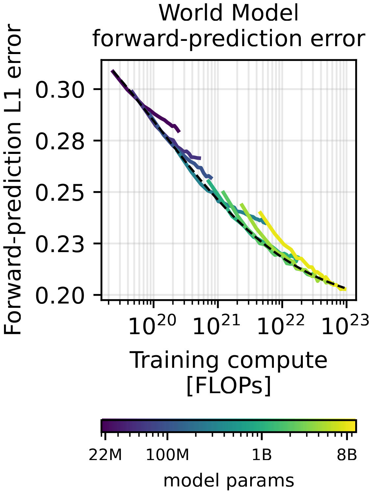
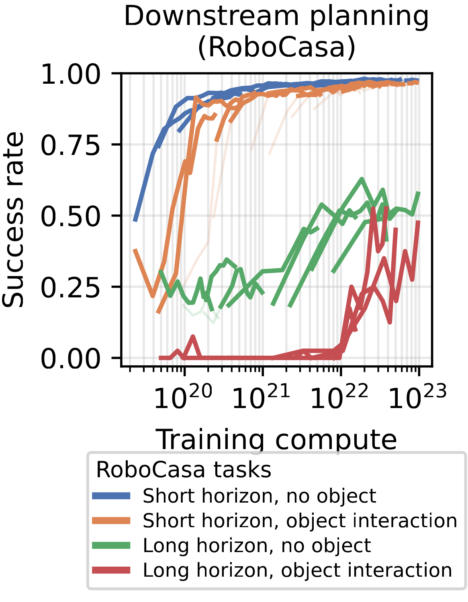
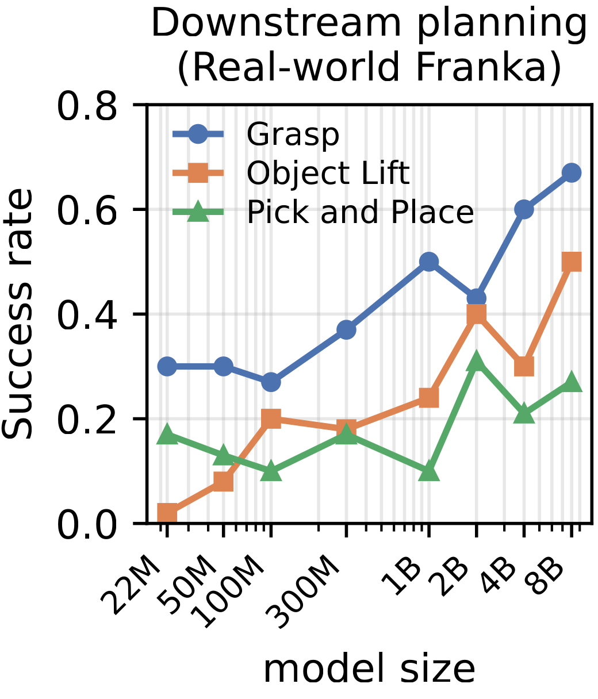
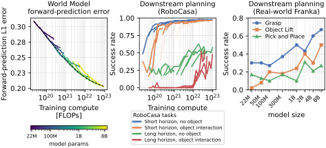

Abstract
Latent world models have shown a remarkable ability to predict future states and to plan in the real world. In practice, however, we lack a principled way to estimate how their capabilities scale with model size, data, and compute, an open problem that slows progress in the field. In this work we present RoboJEPA, a world model based on the Joint Embedding Predictive Architecture (JEPA) and trained on a large-scale dataset spanning 12 robotic embodiments. We show that RoboJEPA's imagination error, the error of its latent rollouts, follows a second-order power law in compute, allowing us to predict model quality well beyond the scale at which the law is fit. We further show that downstream robotic planning performance improves predictably with compute, and that imagination error is strongly correlated with it, making it a reliable proxy for real-robot evaluation. Finally, we demonstrate that latent world models can be deployed zero-shot as robotic agents, planning toward a single goal image to solve tasks requiring long-horizon planning on real hardware. We will release all model checkpoints together with our training and robot deployment code. To our knowledge, this is the first work to establish scaling laws for multi-embodiment robotic world models trained on real robot data, and RoboJEPA, at 8B parameters, is the largest JEPA predictor model trained to date.
Visual abstract



